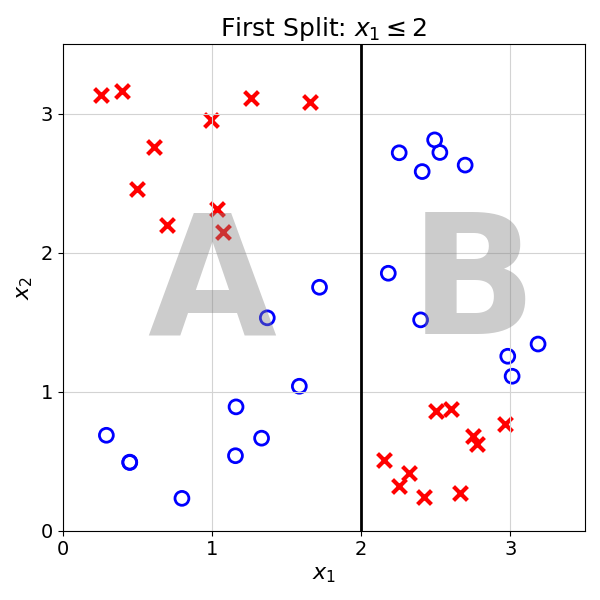
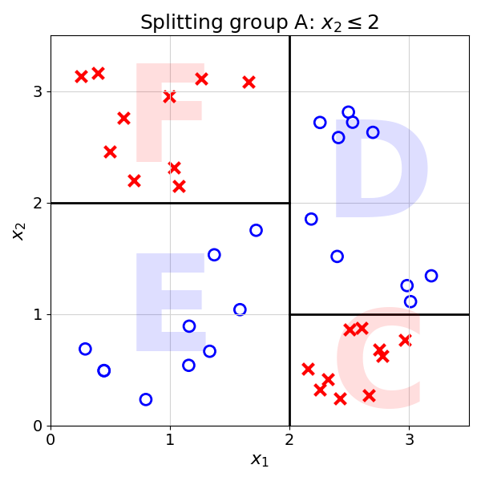

13 Splitting Recursively
The Decision Tree learning algorithm is a recursive algorithm.
13.1 Functions
Recursion is a fascinating idea that builds on the concept of function. In programming, functions are reusable pieces of code that execute a piece of code
As an example, the following function adds two numbers and returns the result:
This is a simple program represented in pseudocode, a language between natural language (like English) and code.
Pseudocode is a language in between natural language and code.
Natural languages are languages like English, French or Chinese that we use to communicate with one another. It is both:
- ambiguous: the same word can mean two or more meanings
- context-dependent: the meaning of a word depends on its context
Code is an unambiguous and context-free language. We use it to define programs to be run by computers.
Pseudocode is closer to natural language and allows us to communicate programs and ideas.
Going through this function line by line:
- Defines a new function called
Adder, that takes two input parametersaandb - Sums the two parameters and stores the result in the
resultvariable - Returns the
resultvariable to the user
In python code, this function definition would look like this:
def adder(a,b):
result = a + b
return resultOnce defined, this function can be called over and over again, without having to copy-paste any code. Functions are a core building block of programming.
To call this function in python, you could write adder(2,3) and 5 would be the result.
13.2 Recursion
In Computer Science, recursion is when a function calls itself, directly or indirectly, to solve a problem by breaking it down into smaller subproblems.
This is the technical definition, this chapter will make this concept more concrete.
Let’s take the Fibonacci sequence as an example:
0, 1, 1, 2, 3, 5, 8, …
In the Fibonacci sequence, the \(n^{th}\) term is the sum of the previous two, with the first two terms of the series being 0 and 1.
To calculate the 3rd term, we add the first two numbers together: 0 + 1 = 1 To calculate the 4th, we add the second and the third number: 1 + 1 = 2
We can continue this process:
- 5th: 1 + 2 = 3
- 6th: 2 + 3 = 5
Exercise 13.1 Compute the 7th and 8th term of the Fibonacci sequence.
To make this process more general, we can compute the \(n^{th}\) Fibonacci term, \(Fibonacci(n)\), with the following expression:
\[ Fibonacci(n) = Fibonacci(n-1) + Fibonacci(n-2) \]
This could be confusing, as a function is used in its own definition. Yet, it simply means that each term is the sum of the two previous ones in the series.
This expression could also be turned into the following program, which would compute the \(n^{th}\) Fibonacci term:
If you have never seen pseudocode before, this may look intimidating. It simply means the following (numbers in the list follow the line number in the code snippet):
- Defines a new function called
Fibonacci, this function takes one parameter calledn - If that parameter is 0, the function returns 0
- If that parameter is 1, the function returns 1
- Otherwise, the function should return the sum of the two previous Fibonacci terms, represented as
Fibonacci(n-1)andFibonacci(n-2)
The last line is recursion in action: a function calling itself! To get Fibonacci(3) we need to compute Fibonacci(2) and Fibonacci(1). To get Fibonacci(2), we need Fibonacci(1) and Fibonacci(0). This is exactly what recursion is about.
Note: In Computer Science, lists start at index 0. So the first term is index 0, the second is index 1 etc…
If you find this confusing, you are not alone. Let’s compute an example with Fibonacci(3), which will return the 4th term of the Fibonacci series (starting at index 0). The following will run the function line by line:
In the above example, each indentation represents a level of recursion.
13.2.1 Recursive Splitting
The splitting logic of a Decision Tree works in a similar way. It keeps splitting subgroups until the stopping condition is met. It could be defined in pseudocode as follows:
In the program defined above, line 2 defines the stopping criterion. In the case that the group contains only one class, the function terminates. Otherwise, it continues recursion with lines 3-5. It keeps splitting the data.
Let’s apply this logic to the example data step by step:
Split(Dataset)
Group contains two classes, proceed to splitting
Best split is found at x1 = 2
Splits Dataset into Groups A and B
Calls Split(Group A) and Split(Group B)
Split(Group B)
Proceed to splitting as group contains two classes
Best split is found at x2 = 1
Splits B into Groups C and D
Calls Split(Group C) and Split(Group D)
:::
Split(Group C)
Does nothing as Group C contains only one class
Split(Group D)
Does nothing as Group D contains only one class
Split(Group A)
Proceed to splitting as group contains two classes
Best split is found at x2 = 2
Splits Group A into Groups E and F
Calls Split(Group E) and Split(Group F)
Split(Group E)
Does nothing as Group E contains only one class
Split(Group F)
Does nothing as Group F contains only one class
Algorithm terminatesIn Computer Science, it is not recursion if your head does not hurt thinking about it.
13.3 Reviewing the Decision Tree Learning Algorithm
The previous chapter has reviewed two foundational concepts of Decision Tree learning:
- Recursion: process calling itself
- Gini Impurity Coefficient: a way to grade different data splits
The Decision Tree Learning algorithm can then be summarised as follows:
This function will build a tree, i.e., a collection of splits and leaf nodes, until there is no further way to split the data. That is it!
To predict for a new observation, they can be passed down the tree. The resulting prediction will be the label that constitutes the majority of the observations in the leaf.
13.4 Final Thoughts
This chapter introduced the foundational concept of recursion. Recursion happens when a function calls itself. In the case of Decision Trees the splitting function first splits the dataset into two groups (see previous chapter), and then calls itself on each of the subgroups. This is done until no further groups can be split.
The next chapter will add some nuance and bring the entire Decision Tree algorithm together.
13.5 Solutions
Solution 13.1. Exercise 13.1
- 7th: \(3 + 5 = 8\)
- 8th: \(5 + 8 = 13\)